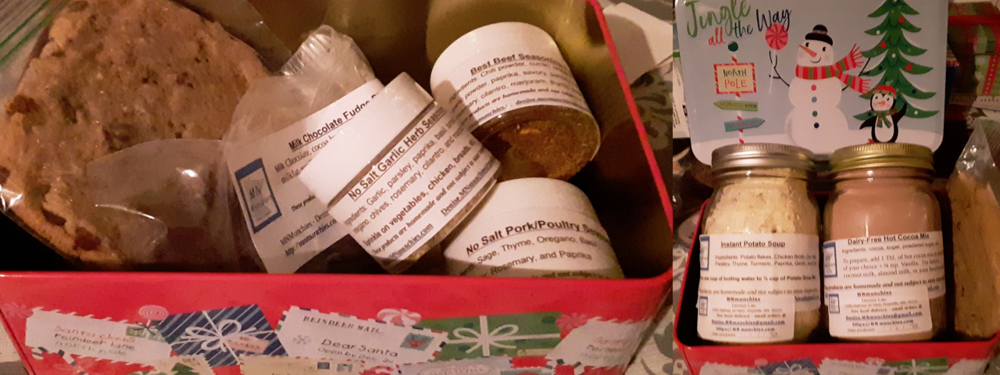

About MN Munchies
I am a Minnesota Cottage Producer who has a variety of food allergies and sensitivities in my household so many of the items that I make are allergy friendly! All ingredients are listed below each item so you can see what exactly is in them. I don’t add preservatives so it’s best to eat these upon delivery or freeze them if it is going to be more than a couple days before the items are consumed. “These products are homemade and not subject to state inspection.” There is free local delivery for those who live in the Twin Cities Area. Check back often as I will continue to add new items for you to order. Feel free to email me about any questions you have on the products I make or if you’d like to special order an item with different spices or add-ins. I’m open to personalizing recipes for you. Email me your order at Denise.MNmunchies@gmail.com . Click for Order Form.

No Salt Seasonings
Small bottle for $5
Medium bottle for $7
Large bottle for $10
4 piece sampler for $17
12 piece sampler $50
25 piece sampler $100
Asian Seasoning
Sprinkle on vegetables with sesame oil or veg. oil, sprinkle on rice, noodles, chicken, fish, etc.
Ingredients: garlic, parsley, paprika, basil, turmeric, ginger, chives, lemon, marjoram
BBQ Pork Seasoning
Great on pork chops, ham, pork ribs, and poultry.
Ingredients: smoked paprika, garlic, oregano, thyme, chili, savory, sage, turmeric, basil, rosemary, parsley, marjoram, mustard, onion, nutmeg, coriander, fenugreek, and lemon balm
Best Beef Seasoning Ever!
Use on ground beef, roast, gravy, buffalo, etc.
Ingredients: chili powder, cumin, oregano, turmeric, garlic powder, paprika, savory, parsley, basil, chives, rosemary, cilantro, marjoram, thyme, sage
Cajun Seasoning (mild)
Great on chicken, pork, seafood, steak, and veggies
Ingredients: smoked paprika, onion, cumin, oregano, chili, ginger, coriander, garlic, thyme, parsley, mustard
Fall Spice (no sugar)
Great on oatmeal, bread, in hot cider, coffee...
Ingredients: cinnamon, nutmeg, ginger, allspice, ground cloves
Fries and Tots Seasoning
Good on french fries, tater tots, popcorn, nuts, etc. Sprinkle to taste.
Ingredients: garlic, basil, parsley, mustard, savory, rosemary, oregano, marjoram, onion, paprika, cilantro, and turmeric
Garlic Herb Seasoning
Great on everything! Try it on your mashed potatoes, baked potatoes, fries, noodles, chicken, beef, rice, bread, etc.
Ingredients: garlic, parsley, paprika, basil, turmeric, oregano, chives, rosemary, cilantro, marjoram
Greek Seasoning
Great on potatoes and other veggies, chicken and beef. Try it on grilled meats and veggies too.
Ingredients: garlic powder, rosemary, cilantro, basil, oregano, parsley, thyme, paprika, savory, nutmeg
Grilling Seasoning
Great on chicken, beef, pork, fish, veggies, etc. Add it to your food before putting it on the grill.
Ingredients: paprika, garlic, oregano, cumin, sage, rosemary, savory, marjoram, nutmeg, ginger
Guac/Salsa Seasoning (mild)
Sprinkle on avocados, tomatoes, guacamole, etc.
Ingredients: cilantro, garlic, parsley, paprika, basil, oregano, chives, marjoram, ginger, turmeric, lime
Hot Apple Cider / Mulling / Baking Spice
Stir in 1 Tb. per quart of warm apple juice or red wine. Great holiday drink! Also great sprinkled on muffins, breads, and other baked goods.
Ingredients: sugar, cinnamon, nutmeg, ginger, allspice, ground cloves
Indian Spice
Good on chicken, potatoes, rice, eggplant, etc.
Ingredients: garlic, chili, ginger, coriander, paprika, onion, cumin, turmeric, fenugreek, cinnamon, cloves, cardamom, caraway, lemongrass, mustard
Italian Herb Seasoning
Sprinkle on breads, pasta, pizza, vegetables, etc.
Ingredients: garlic, basil, marjoram, thyme, oregano, rosemary, sage, savory, cilantro
Mexican Seasoning
Great on chicken, pork, fish, rice, etc.
Ingredients: chili, garlic, parsley, paprika, cilantro, oregano, cumin, chives, turmeric, sage, rosemary, thyme, nutmeg, lime
Moroccan Spice
Good on chicken, shrimp, carrots, roast, couscous, etc.
Ingredients: garlic, chili, ginger, cardamom, cilantro, parsley, cumin, turmeric, allspice, nutmeg, fenugreek, cinnamon, cloves, orange, coriander, mustard
Pasta / Grain Seasoning
Good on pasta, rice, quinoa, etc. Sprinkle to taste.
Ingredients: thyme, garlic, basil, parsley, lemon, oregano, paprika, cilantro, savory, sage, chives, onion powder
Poultry Seasoning
Sprinkle on your turkey, chicken, pork, in your soups, and other food to taste.
Ingredients: sage, thyme, oregano, basil, garlic powder, rosemary, paprika
Seafood Seasoning
mix 1 Tb. of seasoning per 1/2 cup of breadcrumbs for a breading on large fish fillets or sprinkle to taste on shrimp and smaller seafoods.
Ingredients: garlic, parsley, paprika, cilantro, sage, allspice, lemon
Shawarma Seasoning
Good on chicken, beef, roasted chickpeas, and other veggies.
Ingredients: allspice, garlic powder, savory, ground cloves, cinnamon, nutmeg, cardamom, chili powder, oregano, paprika, rosemary powder
Taco Seasoning (No Salt Added)
Add 2 Tablespoons and 1/3 cup of water to a pound of ground meat, simmer until the liquid is absorbed.
Ingredients: chili powder, cumin, oregano, turmeric, garlic powder, paprika, savory
Veggie Seasoning
Sprinkle on veggies or make it a dip!
Ingredients: garlic, parsley, paprika, basil, cilantro, oregano, chives, marjoram, turmeric, nutmeg

Homemade Baked Goods
freshly baked for you


Homemade Herb Bread
$5 per loaf
Ingredients: flour, olive oil, potato, flax seed, yeast, Italian Herbs (marjoram, basil, rosemary, thyme, oregano, savory, garlic, and sage)
Contains: wheat
Homemade Chocolate Chip Brownies
$5/pan
Ingredients: cocoa, flour, sugar, baking powder, chocolate chips, salt, eggs, vegetable oil, and vanilla
Contains: wheat and eggs
Homemade Chocolate Cherry Brownies
$5/pan
Ingredients: cocoa, flour, sugar, baking powder, cherries, salt, eggs, vegetable oil, and vanilla
Contains: wheat and eggs
Flourless Peanut Butter Cookies
$4 for ½ dozen
Ingredients: peanut butter, egg, cinnamon, sugar
Contains: eggs and nuts
Flourless Peanut Butter Cookies with chocolate chips
$4 for ½ dozen
Ingredients: peanut butter, egg, chocolate chips, sugar
Contains: eggs and nuts
Large (egg-free) Chocolate Chip Cookies
$5 for a ½ dozen
Ingredients: flour, butter, sugar, baking soda, salt, vanilla, brown sugar, chocolate chips
Contains: wheat, dairy
No egg Lemon Shortbread Cookies
$5/dozen
Ingredients: flour, butter, lemon, sugar, salt
Contains: wheat, dairy
DIY Kits
Fast, easy, convenient
$2 each
Soups
Instant Potato Soup (just add water)
Ingredients: potato flakes, chicken broth, milk, parsley, thyme, turmeric, paprika, garlic, salt
Contains: milk
Tasty Veggie Soup (just add boiling water)
Ingredients: chicken broth, carrots, broccoli, potatoes, sage, thyme, oregano, basil, garlic powder, rosemary, paprika
Tasty Noodle Soup (just add boiling water)
Ingredients: noodles, chicken broth, carrots, sage, thyme, oregano, basil, garlic powder, rosemary, paprika
Contains: wheat
Healthy Breakfast Muffins

Healthy Fall Spice Muffin (no sugar)
Ingredients: flour, flax, oatmeal, Fall Spice, baking powder
Contains: wheat
Healthy Apple Fall Spice Muffin
Ingredients: flour, flax, oatmeal, apple, sugar, Fall Spice, brown sugar, and baking powder
Contains: wheat
Healthy Blueberry (Mug) Muffin
Ingredients: flour, flax, blueberry, sugar, oatmeal, baking powder
Contains: wheat
Healthy Lemon Blueberry (Mug) Muffin
Ingredients: flour, flax, blueberry, lemon, sugar, oatmeal, baking powder
Contains: wheat
Healthy Cranberry (Mug) Muffin
Ingredients: flour, flax, cranberry, sugar, oatmeal, Fall Spice, brown sugar, baking powder
Contains: wheat
Healthy Orange Cranberry (Mug) Muffin
Ingredients: flour, flax, cranberry, sugar, orange, oatmeal, brown sugar, Fall Spice, baking powder
Contains: wheat
Quick Desserts
No egg Chocolate (Mug) Cake
Ingredients: flour, sugar, cocoa, chocolate chips, baking soda, salt
Contains: wheat
No Egg Chocolate Chip (Mug) Cake
Ingredients: flour, sugar, cocoa, chocolate chips, baking powder, salt
Contains: wheat
Fresh Baked When You Want It
Easy DIY Breads and Brownie Kits
Pan included - $4 each

Herb Bread
Ingredients: bread flour (wheat flour, malted barley flour, niacin, iron, thiamin mononitrate, riboflavin, folic acid), yeast, Italian Herbs (marjoram, basil, rosemary, thyme, oregano, savory, and sage), potatoes.
Contains: wheat
Brownie Mix kits (diy with pan)
Ingredients: brownie mix with cocoa, flour, sugar, baking powder, chocolate chips, and salt
Contains: wheat (and made with eggs)
Jar Mixes
Pint Size Jars for $5 each
Quart Size Jars for $10 each

Instant Potato Soup
Ingredients: Potato flakes, Chicken Broth, Dry Milk, Parsley, Thyme, Turmeric, Paprika, Garlic, and Salt
Dairy-Free Hot Cocoa Mix
Ingredients: Cocoa, Sugar, Powdered Sugar, Salt
To prepare, add 1 Tbl. of hot cocoa mix to the milk of your choice + ¼ tsp. Vanilla. Try heated coconut milk, almond milk, or your favorite milk.
Great Gifts! Who doesn’t love food?
Happy Boxes
Mix and Match anything on this website in a happy box. Get one for a friend, a neighbor, as a thank you gift, as a cheer me up, as a care package for a college student, etc.
Free local delivery. Prices vary depending on what you choose but are the same as the prices listed here on the website. 
Food Challenge! (dinner idea kit)
Are you ready for a dinner challenge? Individually wrapped spices that come with recipe idea cards. Open one a day and make something you like with the spices. The recipe cards come with suggestions on how to use the spices with what you hopefully already have at home. This takes the guesswork out of what to make for dinner tonight.
Available in a 4 pack ($15), 6 pack ($20), 12 pack($40), or 20 pack for $60
Contact : Denise Lau - 2260 Hwy. 36 W, Roseville, MN 55113 USA denise.mnmunchies@gmail.com
Website Design: Jeron Lau